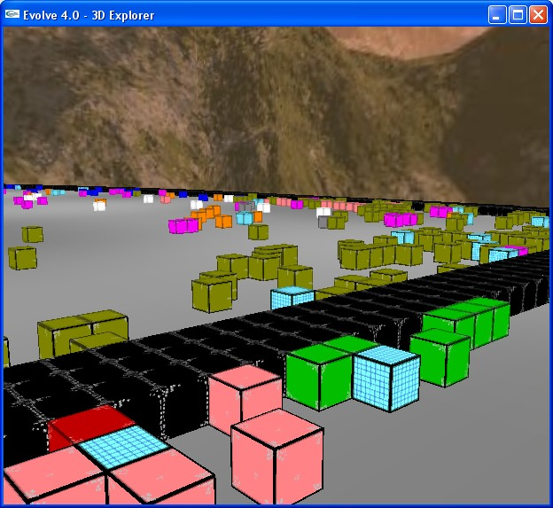

VOLVE 5.0
VOLVE 5.0
3D Explorer
Clicking on the the tb_3d.jpg button will display this first person perspective of your simulaton. You can even watch the simulation in real-time.
{kind=link}
Keys:
- F1 toggle simulator on/off
- ESC quit (or Ctrl-C)
- w move forward
- s move backward
- a strafe left
- d strafe right
- space bar climb
- c descend
- g enter/exit game mode (see below)
Arrow keys can also be used in place of w, s, a, d keys.
Mouse:
Use your mouse to look around. Left click and move the mouse pointer will move where you are looking.
Simulation speed
To alter the number of simulation steps computed between redrawing, press the 1, 2, 3, 4, 5, 6, 7, 8, 9 keys.
1 is the default. This sets the number of simulation steps between redrawing to 1. It provides the smoothest animation (but might be slow). Pressing '9' is good when viewing the simulation from far away.
To speed up the simulation press a larger digit.
NOTES:
- The 3d explorer is a seperate program from the main Evolve application.
- This program operates on a copy of the simulation
- any simulation steps that elapse from pressing F1, will not be reflected in the riginal Evolve program.
- This program uses OpenGL, if your graphics card lacks 3d drivers, microsoft has software emulation which automatically be used, but this will be VERY slow. Check your graphics card manufacturer for the latest opengl drivers.
- when toggling simulation on/off the number of simulation steps is reverted back to '1'.
Game Mode
Press 'g' to enter game mode. You appear at location (0,0). You can run around and EAT stuff using the left mouse button.
The "kenny mccormick" avatar is your character. You move him around trying to eat and kill stuff.
Game mode is a highly "beta" feature. Eventually it will display score, number of lives, and have more game-like behavior. For now you must create levels by making sure the player avatar can get from (0,0) to the rest of the simulation. You'll need to draw/remove barriers to make this happen.
The 'c' and 'space bar' keys will adjust the height of the camera behind your player character.
Moving your mouse will rotate your view (horizontally). Pressing the left mouse button causes your character to eat all material immediately touching you.
If you die, you will see the sky/mountains. It is a sudden transition. Again, not very game-like behavior right now. Pressing 'g' will go back to 3d explorer mode, pressing 'g' a 2nd time will restart you in game mode.
You can press F1 in game mode to pause the game.
When you are killed the organisms that ate you gets all your accumulated energy. (expect to see a sudden spike in births around the location of your death).
The window title bar displays your energy, when in game mode.
Energy is conserved. Adding/removing the player never alters the total energy in a simulation. If you exit game mode (without first being killed) organic material is placed where your character was.